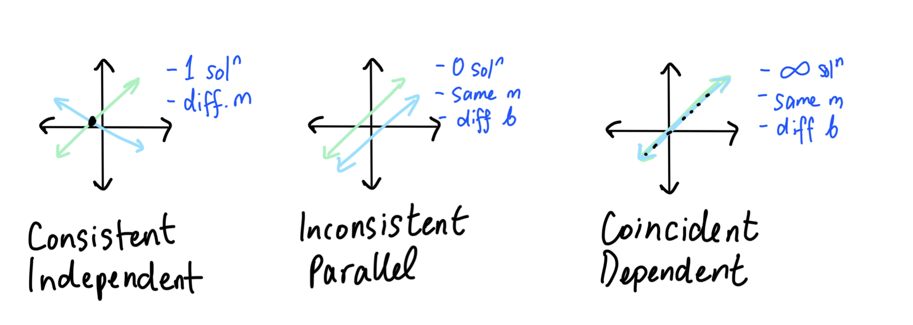
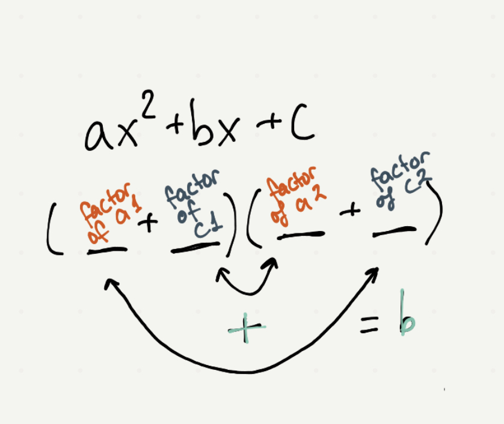
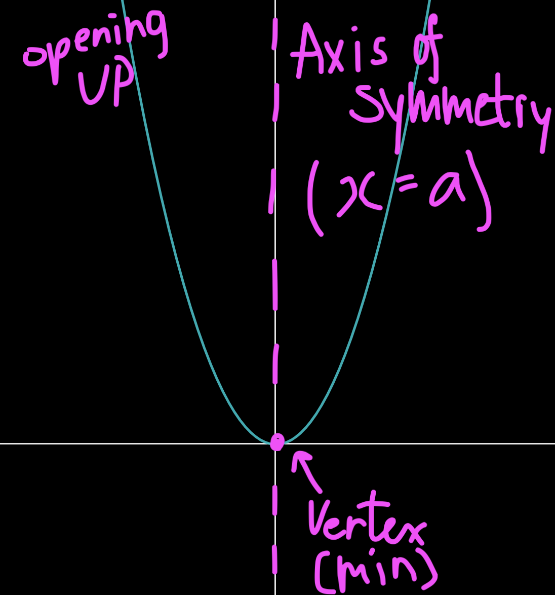
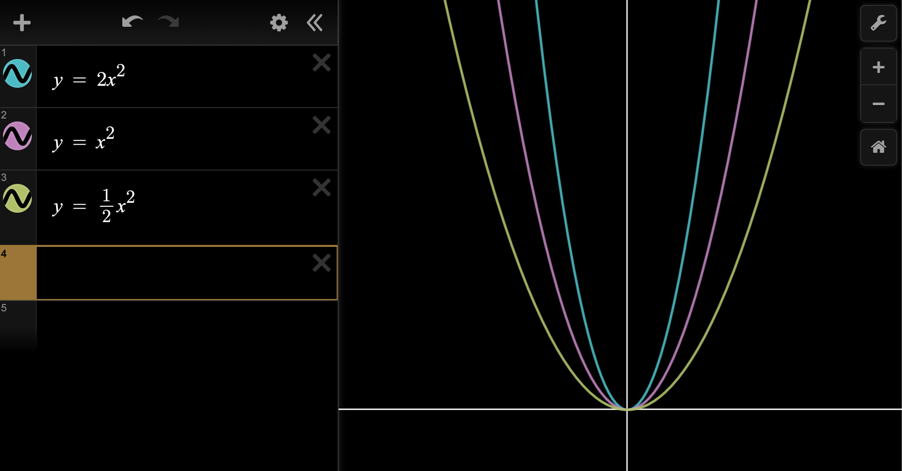

e.g. Bob had $1000 to invest. He puts part in stocks at 4% and the rest in bonds at 5%. Total interest after 1 year is $44. How much was invested at each rate?
let x represent the amount invested in stocks ($)
let y represent the amount invested in bonds ($)
1) x + y = 1000 → 4) x = 1000 - y 2) 0.04x + 0.05y = 44 → (2)*100) → 3) 4x + 5y = 4400
sub x into 3)
4(100-y) + 5y = 4400
4000 - 4y + 5y = 4400 y = 400
sub y into 4)
x = 1000 - 400 x = 600
∴ Bob put $600 into stocks and $400 into bonds.
Mixings
e.g. You need 100L of 42% acid solution. The acid solutions available are 30% and 50%, by volume. How many L of each are needed?
let x represent the num of litres of 30% solution. (L)
let y represent the num of litres of 50% solution. (L)
∴ You would need 40L of 30% and 60L of 50% solutions.
IMPORTANT FOR CURRENT AND SPEED:
distance = speed ("rate") x time
So:
d = rt,
r = d/t,
t = d/r
Current
e.g. A boat took 3 hours (TIME) to travel 36km (DISTANCE) in a river with the current & 4 hrs (TIME) against it. Find the speed of the boat in still water and the speed of the current.
d = rt
let x represent the speed of the boat in still water (km/h)
let y represent the speed of the current (km/h)
1) 36 = (x+y)3 → 3) 12 = x+y trip WITH current 2) 36 = (x-y)4 → 4) 9 = x-y trip AGAINST current
∴ The speed of the beat is 10.5 km/h and the current's speed is 1.5km/h
Distance
e.g. Jill drove 500km from Windsor to Toronto in 6 hrs, she drove part at 100km/h and part at 80km/h. How far did she drive at each speed?
t = d/r
let x represent how far she drove at 100km/h (km)
let y represent how far she drove at 80km/h (km)
1) x + y = 500 2) 6 = x/100 + y/80
Solve by sub/elim
Written Out Notes
Graphing Lines
1) Table of Values (x = -2, -1, 0, 1, 2, make table)
2) Intercept Method (2 points: let y=0, solve x, (x,0) AND let x=0, solve y, (0,y))
3) Slope-Intercept (y = mx+b, start at (0,b) and use m = rise/run to get more points)
Horizontal & Vertical Lines
H - horizontal
V - vertical
O - 0 slope
U - undefined ∞ slope
Y - y-axis, "y=b"
X - x-axis, "x=a"
Perpendicular & Parallel Lines
Perpendicular - slopes are negative reciprocals (flip and multiply by -1) Parallel - slopes are the same
∵ l1 ∥ l2 ∴ m1 = -1/m2
∵ l1 ⊥ l2 ∴ m1 = m2
Linear Systems - Possible Solution Types

Solve Systems of Equations
Graphically
Substitution
Elimination
a) Graph each line
b) Inspect to see POI
c) ∴ The POI is (x,y)
a) Number your equations
b) Solve for any var in any equation
c) Sub b) into the OTHER equation and solve
d) Sub val from c) into any equation
a) Number your equations
b) Multiply your eqns so that one variable has a matching coefficient
c) If coeffs have:
same sign -> subtract
different sign -> add
d) Solve for a variable
e) sub val from d) into any equation
Summary Note - Written Version
Analytical Geometry
Summary Note - Online
Geometric Properties
Summary Note - Written
Summary Note - Online
Common Factor Monomial
- Take out a single term
* Only expand in [] (to see if further factorable)
* If leading term is negative, take the negative
* If all values are taken out, put a one
a) 6x2 - 10x = 2x(3x-5)
b) -4x2y2z + 8x3yz3 - 16x2y4z4
= -4x2yz(y-2xz2+4y3z3)
Common Factor Binomial
- Remove a binomial from the expression
a) 4x(w+1) + 5y(w+1) = (w+1)(4x+5y)
b) -8x2y4(x+1)2 - 4xy4(x+1)
= -4xy4(x+1)[2x(x+1)+1]
= -4xy4(x+1)(2x2+2x+1)
Bonus - negative exponents
- you have to DIVIDE the exponents
* always take out variable with the smallest exp out of all terms
EXAMPLE - no negs:
x4 + x3 + x2 = x2(x4/x2 + x3/x2 + x2/x2) = x2(x2 + x + 1)
With negatives:
Factor by Grouping
- 4 terms (or more)
- Sometimes terms must be re ordered
- Pair up the terms & common factor monomial each pair (if nothing common take out a 1)
- Common factor binomial whole thing (*binomials must match)
a) ac + bc + ad + bd
= c(a+b) + d(a+b)
= (a+b)(c+d)
b) ma - mb + a2 - ab + 2a - 2b
= m(a-b) + a(a-b) + 2(a-b)
= (a-b)(m+a+2)
c) 2x - 3y2 + 2y - 3xy
= 2x + 2y2 + 3xy = 3y2
= 2(x+y) - 3y(x+y)
= (x+y)(2-3y)
Simple Trinomial
x2 + bx + c (x+a)(x+b) = x2 + (a+b)x + ab
a) x2 - 8x + 12 = (x - 6)(x - 2)
b) x2 - 2xy - 15y2 = (x - 5y)(x + 3y)
c) x4 + 6x2 + 8 = (x2 + 2)(x2 + 4)
d) (x2 + x)2 + (x2 + x) - 6 = (x2 + x + 3)(x2 + x - 2) = (x2 + x + 3)(x + 2)(x - 1)
(a + b)2 = a2 + 2ab + b2 (a - b)2 = a2 - 2ab + b2
a) 4x2 + 20x + 25 = (2x + 5)2
b) 9a2 - 24a + 16 = (3a + 4)2
Complex Trinomial
STEPS
1) Choose two numbers that multiply to the first term (order does not matter)
2) Guess two numbers that multiply to the last term (order does matter)
3) first * last + middle * middle = center term

Examples:
1) 2x2 + 5x - 12 = (2x - 3)(x + 4)
2) 3x2 - 14x - 24 = (3x + 4)(x - 6)
3) 6x2 + x - 1 = (3x - 1)(2x + 1)
Factor 3 in 1 Grouping
- trinomial is a perfect square
case 1: x x x x
case 2: x x x x
1) x2 - 6x + 9 - y2
= (x-3)2 - y2
= (x-3+y)(x-3-y)
2) w2 - a2 - 6a - 9
= w2 - (a2 + 6a + 9) *take out the negative
= (w + a + 3)(w - a - 3)
Sum & Difference of Cubes
Sum of Cubes: a3 + b3 = (a + b)(a2 - ab + b2) a3 - b3 = (a - b)(a2 + ab + b2)
* divide by 3
* divide by 2 with difference of squares
a) 27x3 + 64 = (3x+4)(9x2-12x+16)
b) x9 - x3y3 = x3(x6-y3) = x3(x2-y)(x4+x2y+y2)
Summary Note - Written
Quadratic Functions
Summary Note - Typed
Terminology of Quadratics
Quadratic Function - A function of degree 2 in the form ax2+bx+c Parabola - the general shape of a quadratic function. Vertex - the point at which the curve changes direction (if the parabola opens up, the vertex is a min; if the parabola opens up, the vertex is a max) Axis of Symetry - the graph is symetrical about a vertical line drawn through the vertex.

y-intercept - A point at which the graph crosses the y-axis in the form (0,y) x-intercept/zeroes/roots - A point at which the graph crosses the x-axis in the form (x,0) Direction of Opening - The direction that the parabola opens
If a>0 then the parabola opens up (y = x2)
If a<0 then the parabola opens down (y = -x2)
Considering the parabola in the form of y = ax2 Reflection - A transformation that maps the function by a reflection over the x-axis Vertical Stretch - If |a| > 1 then the parabola is stretched vertically and the graph narrows (gets skinnier) Vertical Compression - If 0 < |a| < 1 then the parabola is compressed vertically and the graph widens

Different Forms of Quadratics Standard Form: y = ax2+bx+c
- - helpful to know the y-int (c-value) Factored Form: y = a(x-s)(x-t)
- - helpful to know the x ints ((s,0), (t,0)) Vertex Form: y = a(x-h)2+k
- - helpful to know the vertex (h, k) and used for graphing
Parent function: y = x2
Quadratic Functions
Independent - x (input)
- does not rely on another value Dependent - y (output)
- determined by another value Domain - the set of all x values ({} - set notation) Range - the set of all y values ({} - set notation) Function - each x has only one y value Integers (ℤ) - any positive or negative whole number Real Numbers (ℝ) - any positive or negative number (not i!) Finite Set ("you can count them")
- a specific amount of points Infinite Set ("you can't count them")
- infinitely manny points
SYMBOLS
1) ∈ belongs to
2) ℝ set of real numbers
3) ℤ set of integers
4) | such that
2 ways to identify a function:
1) Ordered Pairs - check if an x valus is repeated
- - YES - Not a function
- - NO - Is a function
2) Graphs - use the VLT (Vertical Line Test)
- - If a graph can be crossed in 2+ places by a vertical line, then it is NOT a function
- - If no matter what, you can only cross in one place, it IS a functino
1) Is there a "start" and a "stop" to the solid line?
- D = {x ∈ ℝ | start x value <= x <= stop x value}
- R = {y ∈ ℝ | start y value <= y <= stop y value}
2) Is there a "start" and then the solid line goes forever?
- D = {x ∈ ℝ | x >= start x value} OR {x ∈ ℝ | x <= start x value}
- R = {y ∈ ℝ | y >= start y value} OR {y ∈ ℝ | y <= start y value}
3) Does the solid line go in either direction forever?
- D = {x ∈ ℝ}
- R = {y ∈ ℝ}
Graph of y = ax2
Conclusions on the effects of "a"
1) Changes step pattern
- Normal step pattern (a = 1) is over 1, up 1, over 1, up 3, over 1, up 5
- When a is diff, multiply norm step pattern by a. For example if a = 2 then step pattern would be over 1, up 2, over 1, up 6, over 1, up 10
2) Direction of openning
- Pos = up
- Neg = down
3) Stretches & compresses
4) Range
Graph of y = a(x-h)2
Conclusions on the effects of "h"
1) Graph shifts left and right
2) Changes vertex
3) Changes the axis of symmetry
Graph of y = ax2+k
Conclusions on the effect of "k"
1) Graph shifts up and down
2) Range changes
3) Max/min value (vertex)
Graph of y = a(x-h)2+k
Combines everything. H shifts graph left and right, K shifts graph up and down.
VERTEX - (h, k)
Axis of symmetry - x = h
Domain - ℝ
Range - {y ∈ ℝ | y >= h}
Solve for y int
let x = 0
solve for y
(0,y)
Finite Differences
Finite Differences - Differences in the y=values when the change in x is constant First Differences - The differences in the y-values. If the first differences are the same, function is LINEAR Second Differences - The differences of the differences. If the second differences are the same, function is QUADRATIC
Determining the Functions using Finite Differences
LINEAR FUNCTION y = mx+b
Since the first differences re the same, therefore this is a linear function 4 Steps
1) Find the slope of the function
* Note - the first difference represents the slope
2) Choose one point (x, y) from the chart
3) Sub in these numbers (m, x, y) into y = mx + b to find 'b'
4) Re-write the equation in the form y = mx+b by writing the values you found from 'm' and 'b'
QUADRATIC FUNCTION y = ax2+bx+c
Since the second differences are the same, therefore it is a quadratic function 5 Steps
1) Find 'c' by making x = 0 (or see table of values)
2) Choose one point (x, y) and 'c' and sub into y = ax2+bx+c to find equation 1.
3) Choose a different point (x, y) and 'c' and sub into y = ax2+bx+c to find equation 2.
4) Use substitution or elimination to find 'a' and 'b'
5) Re-write the function in the form of y = ax2+bx+c by writing the values you found for 'a', 'b', and 'c'
Complete the Square
- used to convert from standart to vertex form (we want vertex form to graph)
y = ax2+bx+c -> a(x-h)2+k
Steps
1) Common factor a out of the first TWO terms (*if there is an a)
- Note - if taking out a fraction, second num gets larger
2) Divide the coefficient of the second term by two and square it
- add AND subtract the number inside the brackets
3) Move the negative term outside the brackets
4) Factor the trinomial & collect like terms
- Trick - divide the second coefficient by two
Quadratic Equations
Summary Note - Typed
X-Intercepts of a Function & Roots of an Equation
3 Ways:
1) Graph it an inspect (rarely works)
2) Factor it - y = a(x-s)(x-t) (usually works)
3) Quadratic formula (always works)
X-ints = roots = zeroes = solve Possible x-ints:
Solve by Graphing
Basically just graph and inspect to see x-ints
- Table of Values
- Complete the square
Solving by Factoring
zero product property - if the product of 2 real numbers is zero, then one or both of those numbers must be zero. ab = 0 => a = 0 OR b = 0
Goal: get zero! (factor, split using zero product property)
Examples:
ADD EXAMPLES
The Quadratic Formula
Quadrantic formula - used to determine the x intercepts of a parabola
"A negative boy couldn't decide whether or not to go to a radical party. The square boy didn't go and missed out on 4 awesome chicks and it was all over by 2am. " x = [-b ± √(b2 - 4ac)]/2a
Form
- write the formula every time
- include "x = "
- fraction line is over tthe entire formula including -b
The Discriminant D = b2 - 4ac
- This tells us how many roots (x-ints) the graph has
Cases:
1) D > 0 two real roots
2) D = 0 one real root
3) D < 0 no real roots (complex)
4) D is a perf square quadratic is factorable
Graphing using x-ints
We can graph in 3 ways:
1) Vertex form (plot the vertex, use step pattern)
2) Table of values (long time, rarely used)
3) Graph in factored form (graph with three points, fill witht step pattern)
Steps
1) Factor and fint the x-int
2) Find the vertex:
- Average the x-int to get the x-val of the vertex
- Sub in the x-value into the equation to get the y-value
3) Plot the x-int, vertex, and use step pattern